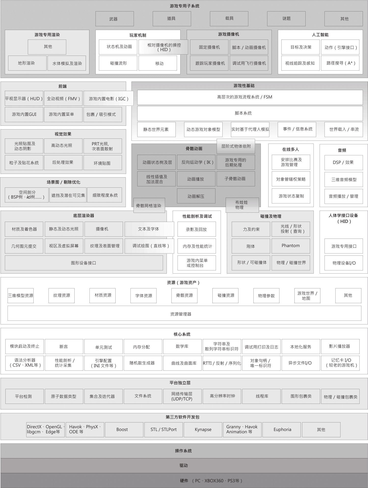

// Line 6
// Cell 6
for (int i= 0 ; i< line; ++i) {
for (int j=0;j < cell; ++j) {
GameObject g = new GameObject ("star" + i + "x" + j, typeof(SpriteRenderer));
SpriteRenderer s = g.GetComponent ();
s.sprite = star;
g.transform.localPosition = new Vector3 (pixelEveryStar *j, pixelEveryStar * i, 0);
g.transform.parent = transform;
}
}
